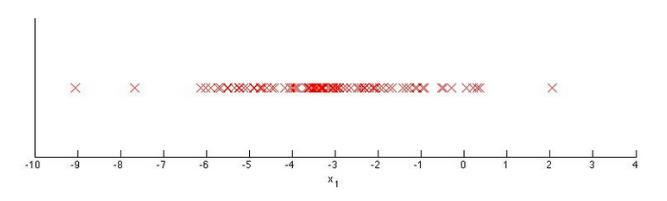

第 71 题
对于下列哪一个问题，异常检测是一个合适的算法？
查看答案与解析
答案 B、D
B、D 都是在大量常规记录里找少见、可能可疑的记录。A 是判断已知人脸身份，C 是预测已知消费类别，适合按监督分类建模。
先学正常数据的分布，再把落在低密度区域的读数交给人核查。
手里有成千上万条正常传感器记录，故障样本却只有几个。与其要求模型认出每种故障，可以先学机器平时怎样波动。
接上之前学过的阈值、误报和漏报。
先把读数从 14 拖向 10，再固定读数 14，只降低阈值。比较两次操作到底改变了密度还是判定标准。
蓝线是正常密度，红色虚线是阈值，淡红区域会被标记待查。
异常检测可以先用大量常规样本估计正常数据的分布，再把很少见的记录挑出来。少量已知异常可以用来挑阈值并衡量误报和漏报。有大量已标记的各类异常时，也可以用监督分类做比较。
均值 μ 表示中心。先求每个数与均值之差的平方，再求平均，可估算本课模型用的方差 σ²；σ 是标准差。高斯分布是一种钟形分布，均值控制中心，方差控制宽度。
N(x; μ, σ²) = exp(−(x−μ)²/(2σ²)) / √(2πσ²)p(x) = ∏j=1n N(xⱼ; μⱼ, σⱼ²)这里 xⱼ 是第 j 个特征，N 表示该特征的高斯密度，∏ 表示把各项相乘。这是把特征近似看作独立时的模型。p(x) 是密度得分，用来比较样本位置的常见程度。
规则 p(x)<ε 时标异常，ε（epsilon）是阈值。调小 ε，要求密度更低才标异常，误报通常会减少，也可能增加漏报。
单看两项都正常，组合起来可能不常见。若正常温度和振动总是差不多，而异常时振动远高于温度，可以构造二者的比值或差值。比值要求除数不为 0。
均值仍为 10，方差为 8/3。读数 10 的密度比读数 14 大多少倍？若 ε=0.05，哪条会被标记？
两者密度前面的系数相同。指数项为 e⁰ 和 e⁻³，因此约为 e³≈20.1 倍。10 的密度约为 0.2443，只有 14 会被标记。
密度有单位，可大于 1。连续变量恰好等于某个值的概率为 0，区间概率是曲线下面积。多维密度相乘可能下溢，可累加对数密度再与 log ε 比较。相关特征可用差值、比值或考虑协方差的模型建模。
先独立作答，再展开解析核对。计算题可以在纸上列式。
对于下列哪一个问题，异常检测是一个合适的算法？
答案 B、D
B、D 都是在大量常规记录里找少见、可能可疑的记录。A 是判断已知人脸身份，C 是预测已知消费类别，适合按监督分类建模。
假设您已经训练了一个异常检测系统，当p(x)<ϵ时标记异常，并且您在交叉验证集中发现它有太多的误报（标记太多的东西为异常）。你该怎么办？
答案 B
判异常的规则是 p(x)<ε。缩小 ε 后，只有更低密度的样本会被报异常，所以能减少误报，也可能漏掉更多真实异常。
假设您正在开发一个异常检测系统来捕获飞机发动机中的制造缺陷。你的模型用p(x)= ∏ⱼ₌₁ⁿ N(xⱼ; μⱼ, σⱼ²) 。 有两个特性x₁=振动强度，x₂=产生的热量，x₁,x₂的值都在0到1之间（并且严格大于0）。 对于大多数“正常”发动机，你期望x₁≈x₂。其中一个可疑的异常是，即使不产生太多热量，发动机也会剧烈振动（大x₁，小x₂），即使x₁和x₂的特定值可能不在其典型值范围之外。 您应该构造哪个特征x₃来捕获这些类型的异常：
答案 B
正常发动机通常 x₁≈x₂，比例 x₁/x₂ 接近 1。振动大、热量小会使这个比值明显变大。题给 x₂>0，可以相除；其余选项不能同样直接表达两个特征的反差。
题册勘误 原题密度乘积的上下标有乱码，按独立特征的高斯密度模型恢复。
以下哪项是正确的？选择所有正确项
答案 A、D
A 可以用未标注的常规样本估计 p(x)，少量已标注异常仍有助于选择阈值和评估。D 说的是找能区分异常的特征。C 因此不成立。有许多已标注的正负样本时，B 所暗示的性能无法由给定条件推知，通常应同时评估监督学习。
题册勘误 B 原文用了“可能”，个别数据上两者可能表现相近。按题目的算法选择原则，参考 A、D。
给出以下一维数据，准备拟合高斯分布以检测异常。

图中哪组参数最可能？μ₁ 表示均值，σ₁² 表示方差。答案 A
点云最密集的位置约在 −3，因此均值选 −3。分布大致向均值两侧展开约几个单位，选项中方差 4（标准差 2）最贴合。方差是对分散程度的估计，图不足以精确读出每个点。
题册勘误 原题 B、D 的数值重复，按原文保留。
均值看中心，方差看分散。降低密度阈值会让报警更严格，可用组合特征表示单列看不出的异常。
异常检测把低分标异常。阈值从 0.05 降到 0.02，得分 0.03 的正常读数会怎样？
由误报变成未标记。降低这个阈值会让标记条件更严格。